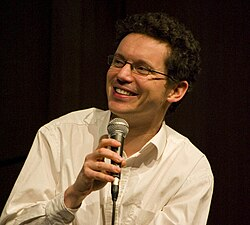

Wendelin Werner | |
|---|---|
 Werner in 2007 | |
| Born | 23 September 1968 |
| Alma mater | École normale supérieure Université Pierre-et-Marie-Curie |
| Awards | Heinz Gumin Prize (de) (2016) Fields Medal (2006) Pólya Prize (2006) Loève Prize (2005) Grand Prix Jacques Herbrand (2003) Fermat Prize (2001) EMS Prize (2000) Prix Paul Doistau–Émile Blutet (1999) Davidson Prize (1998) |
| Scientific career | |
| Fields | Mathematics |
| Institutions | CNRS Université Paris-Sud ETH Zurich University of Cambridge |
| Thesis | Quelques propriétés du mouvement brownien plan (1993) |
| Jean-François Le Gall | |
Doctoral students | |
Wendelin Werner (born 23 September 1968) is a French mathematician working on random processes such as self-avoiding random walks, Brownian motion, Schramm–Loewner evolution, and related theories in probability theory and mathematical physics. In 2006, at the 25th International Congress of Mathematicians in Madrid, Spain he received the Fields Medal "for his contributions to the development of stochastic Loewner evolution, the geometry of two-dimensional Brownian motion, and conformal field theory". He is currently Rouse Ball professor of Mathematics at the University of Cambridge.
Werner was born on 23 September 1968 in Cologne, West Germany. His parents moved to France when he was nine months old and he became a French citizen in 1977.[1] After a classe préparatoire at Lycée Hoche in Versailles, he studied at École Normale Supérieure from 1987 to 1991. His 1993 doctorate was written at the Université Pierre-et-Marie-Curie and supervised by Jean-François Le Gall.
In 1982, Werner acted in the French film La Passante du Sans-Souci.[1]
Werner was a researcher at the CNRS (National Center of Scientific Research, Centre national de la recherche scientifique) from 1991 to 1997, during which he also held a two-year Leibniz Fellowship, at the University of Cambridge. He was Professor at the University of Paris-Sud from 1997 to 2013 and also taught at the École Normale Supérieure from 2005 to 2013.[2][3] He was then Professor at the ETH Zürich from 2013 to 2023.
Werner has received several awards besides the Fields Medal, including the Rollo Davidson Prize in 1998, the Prix Paul Doistau–Émile Blutet in 1999, the Fermat Prize in 2001, the Grand Prix Jacques Herbrand of the French Academy of Sciences in 2003, the Loève Prize in 2005, the 2006 SIAM George Pólya Prize with his collaborators Gregory Lawler and Oded Schramm, and the Heinz Gumin Prize (de) in 2016.
He became a member of the French Academy of Sciences in 2008. He is also a member of other academies of sciences, including the Academy of Sciences Leopoldina and the Berlin-Brandenburg Academy of Sciences and is an honorary fellow of Gonville and Caius College.[2][3][4] He was elected a Foreign Member of the Royal Society in 2020.[5]
{kind=link}